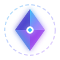

Q
O
V
Y
N
T
Your life. Your direction.
INITIALIZING YOUR SPACE...
0%
วันเสาร์ที่ 21 พฤศจิกายน 2569
สวัสดีตอนเย็น, คุณ 👋
ขอให้วันนี้เป็นวันที่ดีนะ เป็นกำลังใจให้เสมอ!
ค้นหา...
Ctrl + K
การแจ้งเตือน
ใหม่ 1
ยินดีต้อนรับสู่ QOVYNT
เริ่มจัดการชีวิต การเงิน และงานของคุณได้อย่างมีประสิทธิภาพ! เชื่อมต่อคลาวด์อัตโนมัติ
Poom
Google Account
Talaxia007
Google Account
user@gmail.com
Settings (การตั้งค่า)
ระบบ, ปรับแต่ง & การแจ้งเตือน
ฐานข้อมูลคลาวด์ (Database)
Supabase Cloud Sync Active
โหมดแสดงผล (Dark Theme)
Cyber Dark Violet
Logout (ออกจากระบบ)
สิ้นสุดเซสชันปัจจุบัน
ESC